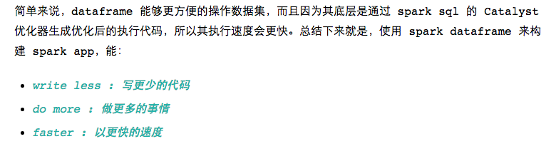
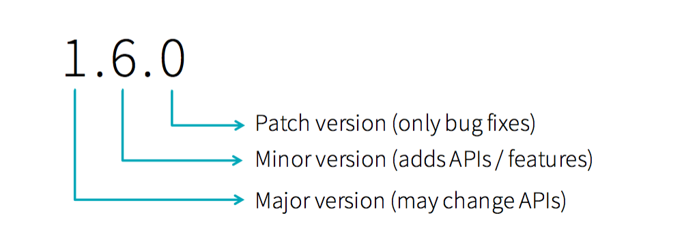
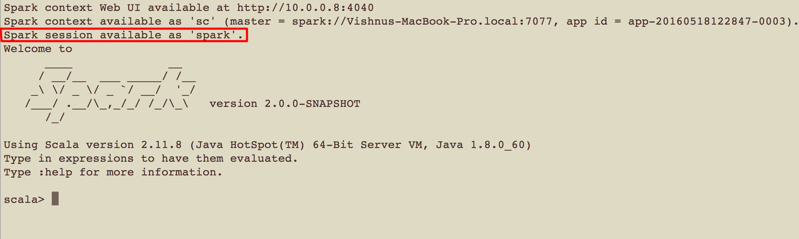
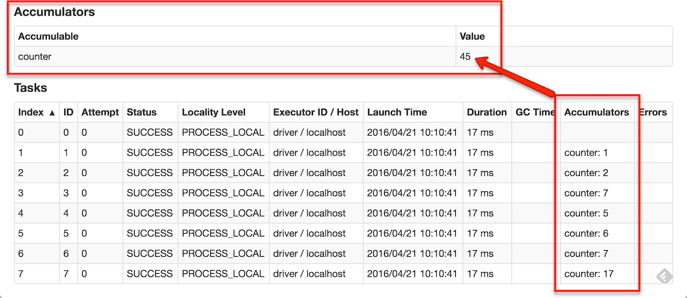
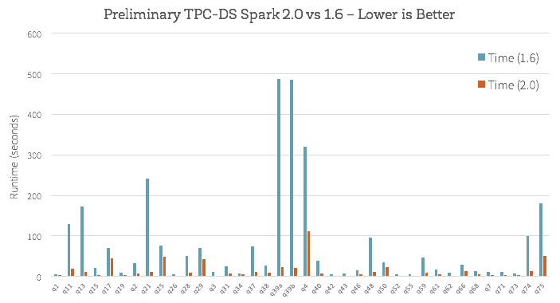
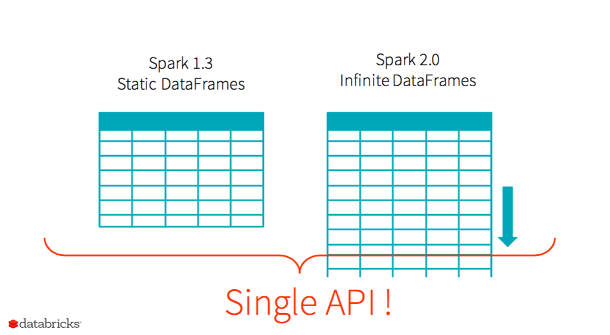
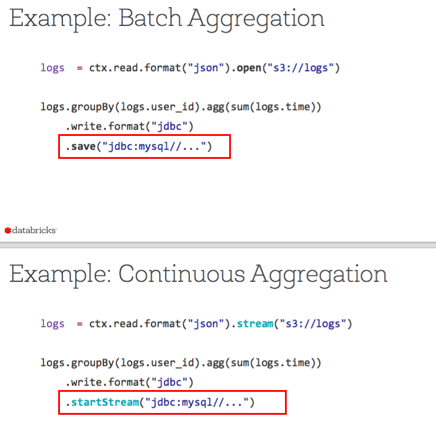

『 Spark 』12. Spark 2.0 | 10 个特性介绍
2016-06-16
写在前面
本系列是综合了自己在学习spark过程中的理解记录 ＋ 对参考文章中的一些理解 ＋ 个人实践spark过程中的一些心得而来。写这样一个系列仅仅是为了梳理个人学习spark的笔记记录，所以一切以能够理解为主，没有必要的细节就不会记录了，而且文中有时候会出现英文原版文档，只要不影响理解，都不翻译了。若想深入了解，最好阅读参考文章和官方文档。
其次，本系列是基于目前最新的 spark 1.6.0 系列开始的，spark 目前的更新速度很快，记录一下版本号还是必要的。
最后，如果各位觉得内容有误，欢迎留言备注，所有留言 24 小时内必定回复，非常感谢。
Tips: 如果插图看起来不明显，可以：1. 放大网页；2. 新标签中打开图片，查看原图哦；3. 点击右边目录上方的 present mode 哦。
1. Spark 2.0 !
还记得我们的第七篇 Spark 博文里吗？里面我用三点来总结 spark dataframe 的好处：

当时是主要介绍 spark 里的 dataframe，今天是想总结一下 spark 2.0 的一些重大更新，准备过段时间［等到 2.0.1 或者 2.1 出来了就］切换到 spark 2.x 来。当我看官方的一些介绍和一些相关文章的时候，我发现 spark 2.0 的特点，也可以用第七篇里总结的 dataframe 的特点来说明，那就是：
- write less : 写更少的代码
- do more : 做更多的事情
- faster : 以更快的速度
真心觉得 spark 做得很不错，databricks 做得太赞了，现在 databricks 的社区版 [DCE : Databricks Community Edition] 也开放注册了，大家还没有注册的赶紧去体验这个产品吧，so amazing，注册链接：community.cloud.databricks.com。
言归正传，下面从几个亮点来总结一下 spark 2.0 的更新，基本上都是看官方文档，相关的 video，slide 和一些技术博文来的，参考的文章都会在后文列出来的。
2. Spark 版本号说明
如图是 spark 版本号的三个不同数字的介绍，以 1.6.0 版本举例：
- 1 : major version : 代表大版本更新，一般都会有一些 api 的变化，以及大的优化或是一些结构的改变；
- 6 : minor version : 代表小版本更新，一般会新加 api，或者是对当前的 api 就行优化，或者是其他内容的更新，比如说 WEB UI 的更新等等；
- 0 : patch version : 代表修复当前小版本存在的一些 bug，基本不会有任何 api 的改变和功能更新；记得有一个大神曾经说过，如果要切换 spark 版本的话，最好选 patch version 非 0 的版本，因为一般类似于 1.2.0, … 1.6.0 这样的版本是属于大更新的，有可能会有一些隐藏的 bug 或是不稳定性存在，所以最好选择 1.2.1, … 1.6.1 这样的版本。

3. 特性 1 - 官方文档
spark 2.0 似乎对官方文档做了比较大的改变，赞，这里是 2.0 预览版的文档链接，等不及的小伙伴们可以先看了：
4. 特性 2 - 支持标准 SQL 语句
On the SQL side, we have significantly expanded the SQL capabilities of Spark, with the introduction of a new ANSI SQL parser and support for subqueries. Spark 2.0 can run all the 99 TPC-DS queries, which require many of the SQL:2003 features.
上面提到的 TPC-DS 这个概念没有必要去了解了，我是 google 了之后才知道的，如果感兴趣的话可以看这个链接：TPC-DS。
总结下来：
- Spark 2.0 中, SQL:2003 语法全部支持了，下面是 sql 语法的发展历程，可以说，虽然 sql 2003 之后又更新了两个版本的语法，但在实际使用情况中，sql 2003 已经完全能 handle 99% 的场景了。
1986年，ANSI X3.135-1986，ISO/IEC 9075:1986，SQL-86
1989年，ANSI X3.135-1989，ISO/IEC 9075:1989，SQL-89
1992年，ANSI X3.135-1992，ISO/IEC 9075:1992，SQL-92（SQL2）
1999年，ISO/IEC 9075:1999，SQL:1999（SQL3）
2003年，ISO/IEC 9075:2003，SQL:2003
2008年，ISO/IEC 9075:2008，SQL:2008
2011年，ISO/IEC 9075:2011，SQL:2011
- Spark 2.0 中，更新了新的 SQL 解析器，可以支持子查询了，特地重复一下，因为基本上所有复杂的 sql 语句都会用到子查询，官方有例子: Subqueries in Apache Spark 2.0
5. 特性 3 - 统一 DataFrames and Datasets API
在 spark 2.0 中，把 dataframes 当作是一种特殊的 datasets，dataframes = datasets[row]，把两者统一为 datasets。但是需要注意的是，目前只更新了 scala 和 java 的api，python中尚未更新。而且 spark 2.0 中引入了 structured streaming 的概念，需要 dataframe 的支持，其中的 dataframe 也已经用 datasets[row] 来实现了。
官方的关于 DataSets API 的使用说明：Dataset API
6. 特性 4 - SparkSession
在 spark 2.0 之前，sparkContext 是 Spark应用的入口。除了 sparkContext，还有 sqlContext，StreamingContext，HiveContext 等其他入口。然而到了 spark 2.0 后，因为逐渐要采用 DataFrame 和 DataSets 作为 API 使用，需要一个统一的入口点，所以就诞生了 SparkSession。本质上，可以简单的把 SparkSession 理解成 sparkContext, sqlContext, StreamingContext, HiveContext 的统一封装。
下面是一个来自官方的 demo：
import org.apache.spark.sql.SparkSession
val sparkSession = SparkSession.builder
.master("local")
.appName("my-spark-app")
.config("spark.some.config.option", "config-value")
.getOrCreate()值得注意的一个点是，在 2.0 之前，启动 spark repl 时，会自动给你创建一个 sparkContext，叫做 sc，但在 2.0 之后，启动 spark repl 时会自动给你创建一个 SparkSession，叫做 spark。

这里有一个 databricks 出的关于 SparkSession 的说明文档和使用方法：SparkSession - a new entry point
7. 特性 5 - 新的 Accumulator API
spark 2.0 设计了新的 Accumulator API，用户可以基于默认的 Accumulator 实现自己定义的 Accumulator，当然老的 Accumulator 还是保留使用的。
下面是一个用户自定义 Accumulator 的例子：
class VectorAccumulatorParam(AccumulatorParam):
def zero(self, initialValue):
return Vector.zeros(initialValue.size)
def addInPlace(self, v1, v2):
v1 += v2
return v1
# Then, create an Accumulator of this type:
vecAccum = sc.accumulator(Vector(...), VectorAccumulatorParam())而且 spark 2.0 里可以在 web ui 里查看 Accumulator 的数据了，非常方便［注明一下，这里我没有尝试过在 2.0 之前是否可以在 web ui 里查看 Accumulator 的数据，如果有写错了请大家指出哈，谢谢］

8. 特性 6 - DataFrame Based Machine Learning
在上篇文章里 『 Spark 』11. spark 机器学习，我们也提到过，从 2.0 开始，spark machine learning 开始采用基于 dataframe 开发的 ml package，基于 RDD API 的 mllib 将不再开发新 feature，只做维护。
9. 特性 7 - Machine learning pipeline persistence
spark 2.0 支持机器学习持久化了，虽然 2.0 之前也有类似的功能，但在这方面，2.0 有两大亮点：
- 不仅可以 save & load 模型，还可以 save & load 模型的 pipeline；
- 可以跨语言 save & load 模型，比如说你用 scala 实现了一个模型，并且 save 到磁盘上，之后可以用 python 来 load 这个模型；
这里有官方出的一个介绍文档和使用说明：Saving & loading Machine Learning (ML) models
10. 特性 8 - Distributed algorithms in R
也可以用 R 来实现一些机器学习算法了： Generalized Linear Models (GLM), Naive Bayes, Survival Regression, and K-Means.
11. 特性 9 - Whole-stage code generation
spark 2.0 性能上会有较大的提升，根据官方文档，2.0 会引入新的物理执行引擎 new Tungsten execution engine，相对于之前的执行引擎［之前也有 code generation］，新的物理执行引擎会充分利用 内存，cpu，cpu 寄存器 三者，最大化的提升代码执行速度。
关于 new Tungsten execution engine 的原理，可以参考这篇官方博客：Apache Spark as a Compiler: Joining a Billion Rows per Second on a Laptop : Deep dive into the new Tungsten execution engine
这里有官方做的一个简单的测试：Performance of Spark 2.0’s Tungsten engine
下图是一个简要的性能对比截图： 
12. 特性 10 - Structured Streaming
这个就不用说了，是 2.0 的三大更新之一。官方的这句话很有意思: the simplest way to compute answers on streams of data is to not having to reason about the fact that it is a stream.，中文翻译来说就是说：处理流式计算最简单的方法，就是不要特地去区分流式计算与非流式计算的区别［因为归根结底，他们都是数据，我们要区分的，并不是数据本身，而是我们处理数据的方式］
在 rxin 的这个 slide 里，Apache Spark 2.0: Faster, Easier, and Smarter，第 17 ～ 26 也专门有说 2.0 里的 structure streaming，非常值得借鉴。
下面是其中两张需要理解的 ppt 截图：
 
13. Next
最近 databricks 出了一篇非常不错的文章，讲 spark 的一些概念的，个人觉得非常不错，下一篇就翻译这篇文章吧。届时大家可以结合起第二篇文章一起理解：『 Spark 』2. spark 基本概念解析
14. 打开微信，扫一扫，点一点，棒棒的，^_^

参考文章
- Spark 2 0
slideSpark 2 0- Apache Spark 2.0: Faster, Easier, and Smarter
- Preview of Apache Spark 2.0 now on Databricks Community Edition
- Technical Preview of Apache Spark 2.0 Now on Databricks
- Spark 2.0介绍：SparkSession创建和使用相关API
- SparkSession - a new entry point
- http://blog.madhukaraphatak.com/introduction-to-spark-two-part-1/
- Experiment with Spark 2.0 - Session
- Spark Programming Guide of 2.0 Preview
- Spark Series on Iteblog
- Performance of Spark 2.0’s Tungsten engine
- Apache Spark as a Compiler: Joining a Billion Rows per Second on a Laptop : Deep dive into the new Tungsten execution engine
- Demo 2. SparkSession - the new entry point
- Dataset API
- Saving & loading Machine Learning (ML) models
- Subqueries in Apache Spark 2.0
本系列文章链接
- 『 Spark 』1. spark 简介
- 『 Spark 』2. spark 基本概念解析
- 『 Spark 』3. spark 编程模式
- 『 Spark 』4. spark 之 RDD
- 『 Spark 』5. 这些年，你不能错过的 spark 学习资源
- 『 Spark 』6. 深入研究 spark 运行原理之 job, stage, task
- 『 Spark 』7. 使用 Spark DataFrame 进行大数据分析
- 『 Spark 』8. 实战案例 ｜ Spark 在金融领域的应用 ｜ 日内走势预测
- 『 Spark 』9. 搭建 IPython + Notebook + Spark 开发环境
- 『 Spark 』10. spark 应用程序性能优化｜12 个优化方法
- 『 Spark 』11. spark 机器学习
- 『 Spark 』12. Spark 2.0 特性介绍
- 『 Spark 』13. Spark 2.0 Release Notes 中文版
- 『 Spark 』14. 一次 Spark SQL 性能优化之旅